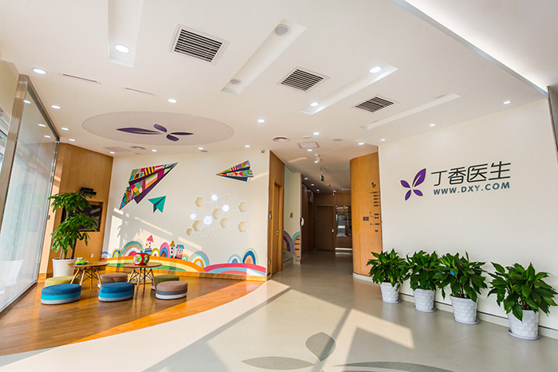
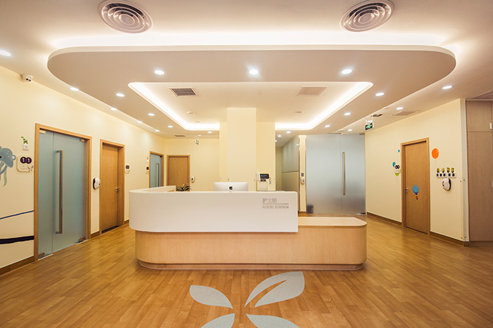

诊所故事返回上一页
探秘：终于揭开面纱的丁香诊所长啥样
2016-07-08 健康点
「丁香诊所正式开业大概会在 11 月初，10 月 8 日是诊所装修全部完成了，邀请政府监管部门来看，提出不足和需要整改的地方。这跟开网站的审批手续是一样的，得事先把场地、各种设备、设施准备齐全，然后请相关部门来检查，对设施布局提出意见审核通过后才能正式开业。」当外界对丁香医生诊所没有如期开业发出质疑时，在近日丁香园的媒体沟通会上，丁香园创始人李天天做了上述回应。
其实，在今年初传出国内移动医疗行业两大排头兵丁香园和春雨医生都殊途同归地宣布要办线下诊所，走线上+线下结合的商业模式时，业界有人认为这是移动医疗在中国发展的「必然」，也有人认为这又走回了传统医疗模式，前景不明。但无论何种观点，丁香医生诊所的开业运营，无疑都聚焦了业内的目光。
那么，将要正式揭开面纱的丁香诊所究竟会以何面目展现在公众眼前呢？先通过图片了解一下传说中的丁香诊所。


诊所的面积是 800 平米，有 12 个诊室，经测算，饱和的门诊量大概在每天 250~300 个患者。
据李天天介绍，丁香诊所定位在中端全科诊所，提供常见病、多发病、慢病诊疗服务，同时建立诊疗前的咨询服务和诊疗后的慢病管理。这一部分不仅有医生，护士、检验科医生也参与进来，从只靠医生为中心来提供服务，过渡到通过护士来进行慢病的患者教育。
还有儿童游乐区，估计小朋友再也不会害怕打针了。
丁香诊所还可以为患者提供护士和医生可以上门服务的居家（FAMILY）特色的服务。此外，未来还会与国内外的可穿戴设备提供商进行合作，来共同进行慢病的管理，以及提供远程的诊疗服务，通过远程的诊疗来降低成本，保证质量。实行线上线下一条龙和线下一站式的医疗服务模式。
丁香诊所只聚焦在患者照护（PATIENT CARE）这个环节。药品的供应和配送交给上药云健康，检验、配液、输液平台、心电监测都交给第三方机构来完成。
看起来和一般严肃单调的医院格调不同，那么收费贵不贵呢？李天天说，「诊疗费有所提高，但会减少药品加成和检查加成，让诊疗服务价格可负担。」
丁香诊所负责人杨泽方更直白：「便宜，绝对比公立医院便宜！患者在诊所的总体花费会控制在大型公立医院的三分之一或四份之一。」 据健康点记者了解，具体价格根据病情的复杂程度有个细微的划分，其中不包括药费和检查费等。
丁香诊所首席医学官肖锋表示，丁香诊所承诺过度医疗和过度收费在丁香医生诊所绝对不会发生。诊所会把疾病、症状标准化，制成标准的流程和方案，就诊前医生和护士会向患者详细讲解诊疗过程。就诊第二天，患者的精神科医生会通过微信、电话、E-Mail 向患者做随访。
在人员培训方面，从 9 月 17 日开始，丁香诊所与浙江大学医学院附属第二医院联合举办了为期 21 天的培训。这个培训包括 4 天的全科医生最基本的技能手把手教学。授课的 19 位医生老师来自于 11 个中国和美国知名的医学院校，包括美国的约翰霍普金斯大学，马里兰大学，南加州大学, SAN DIEGO 最有名的儿童医院，浙二医院，浙一医院，邵逸夫医院和北京协和医院，北京和睦家医院以及北京海军总院。
李天天这样诠释，丁香诊所强调质量和流程的标准化，质量是医疗和品牌的关键，一个诊所怎么去创立出自己的品牌，一切都是靠质量说话，所以我们把医疗质量放在第一位。这也可以解释为什么会投入很多的资源去培训医生和护士，要建立一套标准化的质量和服务体系，通过丁香园这个平台把这套体系在线上向更多的医生宣传和推广。
对患者来说，价格是挺诱人的。不过俗话说，「一分价钱一分货」，收费低了能保证医疗质量么？还有，你们怎么赚钱呢？
对此，杨泽方对健康点记者表示。「盈利的方式不光是收诊金，还有线上和线下很多方式可以合作，和保险公司合作，线上合作，上门服务，现在还有很多商业模式还在商讨中，不能展开充分，但有设想。」
「通过线上把医生的服务能力延伸出来，提高医生的服务价值，可能来诊所的病人并不多，但这样就跳出了原来用经营饭馆的思维来经营医院。」李天天补充道。
和商业保险合作？美国的移动医疗公司很大一部分收益来自健康保险公司，而中国的医健康保险虽然发展了十几年，因为始终无法盈利，还处在业务发展的早期阶段，想让保险公司买单，人家可没那么傻呢！
李天天说，「我参加过很多创业模式的大赛，很多人觉得吸引到足够多的用户就能吸引保险公司来买单，其实差的很远，因为中国的健康险业务还处在很早期阶段，再加上基础医疗严重不足，这两个因素加起来很难让保险公司痛快的买单。对于高端诊所，保险公司也非常痛恨，为什么呢？收费太高了，一个普通挂号就上千块，再加上其他一些收费，很快就把保险吃掉了。」
那丁香园是怎么和保险公司合作呢？李天天表示，需要去想一个中端的、患者可负担的，既能保证医疗质量又能很好控费的模式。「买保险就是买服务，我的服务可以给患者带来什么价值，这些价值能帮助解决哪些问题，能否节省疾病加重后的成本控制，这些都需要数据。需要在诊所开展的早期请保险公司进来一起设计，但不要指望着把他叫进来给你出钱，而是变成重要的合作伙伴。」李天天说。
据杨泽方向健康点记者透露，目前在和几家商业保险公司谈合作，有整体打包、单病种付费，或者会员制等等都在设计中，目标是形成患者、保险公司、诊所三方博弈的格局，节省的费用三方利益分享。
一个三甲医院的院长说，大医院虽然不缺病人，但是要盈利的话，关键在于运营和控制成本。丁香诊所要怎么控制成本呢？杨泽方表示，成本控制没问题。首先，因为他们都是专业医生，知道哪些药品和检查患者需要用，哪些不需要，哪些产品的价格低但能起到同样的效果，所以从诊所就可以控制患者的医疗花费。设备和设施，医疗耗材，以及诊所选址租房都有专门人员负责，能拿到比较低的价格。「福州的儿科诊所控费工作就做的很多，第一个月就盈利了。」
作者：张敏，文章来源：健康点
如若转载，请注明出处：http://www.healthpoint.cn/archives/36275
- 微信自助预约
- 高效就诊流程
- 诊后微信随访
杭州市滨江区滨盛路口 2313 号 (长河路滨盛路口)
T: 0571-86687392
E: dxzs01@dxy.cn